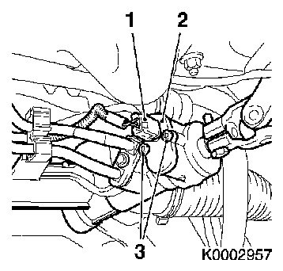
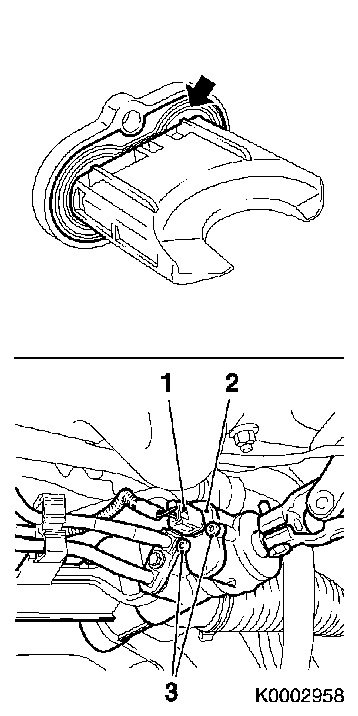

Steering Angle Sensor: Service and Repair
Steering angle sensor, changing (EHPS)To remove
1. Remove the cable kit connector (1)
Detach and pull away

2. Remove the steering angle sensor (2)
2 x Unscrew bolt (3)
Pull the steering angle sensor from the steering gear housing
3. Cleaning
Clean the sealing surface
To fit
4. Fit the steering angle sensor (2) in the gearcase
Check that the seal (arrow) is fitted correctly
Note the fitting position

5. 2 x Screw in bolt (3) (6 Nm)
6. Attach cable kit connector (1)